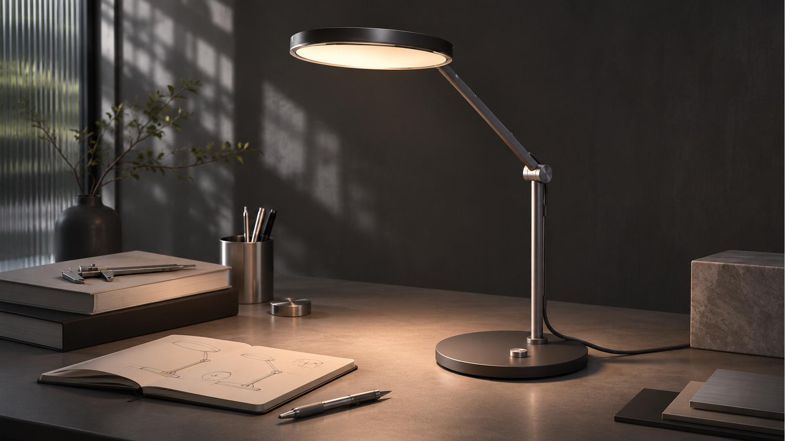

01 / LAMP HEAD
燈頭與光線方向
以核定主視覺的圓盤燈頭為外觀參考；光學、尺寸與散熱皆尚待工程評估。
OBJECT/01 為工業桌燈概念提案。本次展示以核定的產品主視覺、爆炸示意與包裝影像為核心，整理其造型與設計敘事。燈頭、懸臂、關節及底座的工程尺寸尚待同源模型確認；材質、調光與包裝均為提案方向。

以核定主視覺的圓盤燈頭為外觀參考；光學、尺寸與散熱皆尚待工程評估。
關節及懸臂關係依核定爆炸示意圖解讀；運動範圍與結構公差尚未測試。
以核定圖片表達底座與線材外觀，不主張已取得配重穩定度或相關檢測結果。
SHOT 14 為包裝開盒概念，內托、固定方式與運輸保護尚未打樣驗證。
微珠擊霧面陽極自然鋁，搭配高光精密車削金屬飾環與轉軸飾蓋、乳白光學漫射板，以及深石墨抗折編織線。呈現極致冷冽純粹的建築工程質感。
深炭黑細緻微絨粉體烤漆，搭配槍色鈦金屬光澤飾環與軸蓋、溫潤柔光漫射板。吸收環境雜亂光線，在暗調桌面中展現沈穩純粹的量體。
低彩度建築苔綠陽極氧化，搭配暖銅香檳金車削飾環與大地色微霧光學板。將自然綠意與礦石色調帶入生活空間，兼具人文溫度與工業精密感。
透過燈頭與工作桌面的相對位置研究照射方向，實際照度須經測試。
懸臂轉動與定位屬於設計意圖，阻尼及安全範圍需實體樣機驗證。
調光方式尚待電子控制與人因設計驗證，未宣稱已完成實體機構。
本案為工業產品與燈具概念設計提案（Industrial Design Concept）。本頁面所載之光束投影、桌面閱讀照度、旋鈕阻尼感與包裝刀模均屬概念設計意圖與視覺模擬，未進行實體開模量產，亦未宣稱已通過各國強制性電氣安全認證。影像與早期 WebGL 研究模型尚未完成幾何對位，不得以概念圖推定實體產品性能。